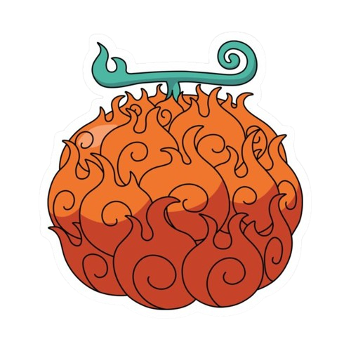
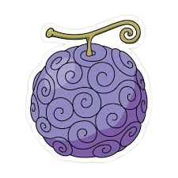
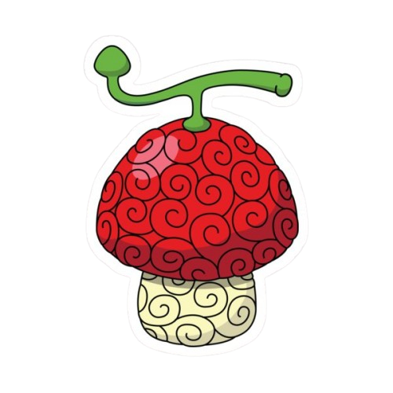
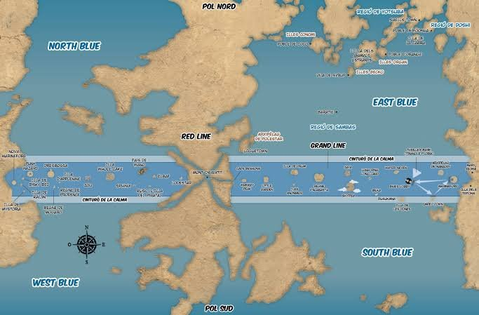
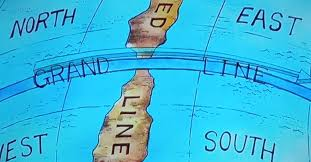
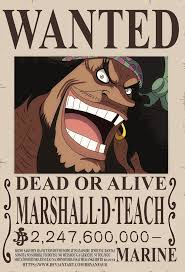
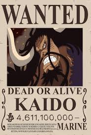
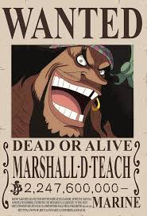
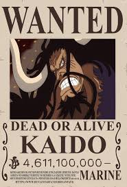

Sobre
One Piece é um anime e mangá criado por Eiichiro Oda, lançado em 1997. A história se passa em um vasto mundo repleto de ilhas, mares misteriosos e piratas aventureiros. O protagonista, Monkey D. Luffy, é um jovem sonhador que almeja se tornar o Rei dos Piratas ao encontrar o lendário tesouro "One Piece", deixado pelo antigo Rei dos Piratas, Gol D. Roger.


Premissa e Objetivo
One Piece é ambientado em um mundo fictício repleto de oceanos imensos, ilhas diversas e culturas únicas. A história começa com o legado do lendário Rei dos Piratas, Gol D. Roger, que antes de sua execução revelou que havia escondido o maior tesouro do mundo, o One Piece, em um lugar chamado Grand Line. Essa declaração deu início à Era dos Piratas, onde aventureiros de todo o mundo zarparam em busca do tesouro.
O protagonista, Monkey D. Luffy, é um jovem otimista e determinado que sonha em encontrar o One Piece e se tornar o próximo Rei dos Piratas. Inspirado por seu ídolo de infância, Shanks, o Ruivo, Luffy parte em uma jornada marítima, enfrentando desafios enquanto constrói sua tripulação, os Piratas do Chapéu de Palha.
Frutas do Diabo (Akuma no Mi)
Um dos aspectos mais icônicos de One Piece é a existência das Frutas do Diabo, que concedem poderes extraordinários a quem as come, mas ao custo de perder a habilidade de nadar. Esses poderes variam amplamente e são divididos em três categorias:
Paramecia: Oferece habilidades variadas, como elasticidade ou manipulação de substâncias.
Zoan: Permite ao usuário se transformar em um animal ou em híbridos de animal.
Logia: Dá controle sobre elementos naturais, como fogo ou gelo.
Luffy, por exemplo, comeu a Gomu Gomu no Mi, que o torna um homem-borracha.
  Grand Line e Novo Mundo
A trama principal ocorre no perigoso e misterioso oceano chamado Grand Line, conhecido por suas condições imprevisíveis, criaturas marinhas gigantescas e uma infinidade de perigos. É lá que se encontram as maiores aventuras e adversidades.
Após atravessar a primeira metade do Grand Line, os piratas entram no Novo Mundo, onde enfrentam desafios ainda maiores, incluindo os temidos Quatro Imperadores, os piratas mais poderosos do mundo.
 Adversários e Ameaças
Luffy e sua tripulação enfrentam uma ampla gama de inimigos:
Marinha: A força militar global que combate piratas.
Shichibukai: Sete piratas poderosos que trabalham para o governo.
Yonkou (Quatro Imperadores): Os quatro piratas mais temidos que dominam o Novo Mundo.
Governo Mundial: Uma organização política que esconde segredos obscuros.
Além disso, eles enfrentam outros piratas, caçadores de recompensas, organizações criminosas e fenômenos naturais.
 


